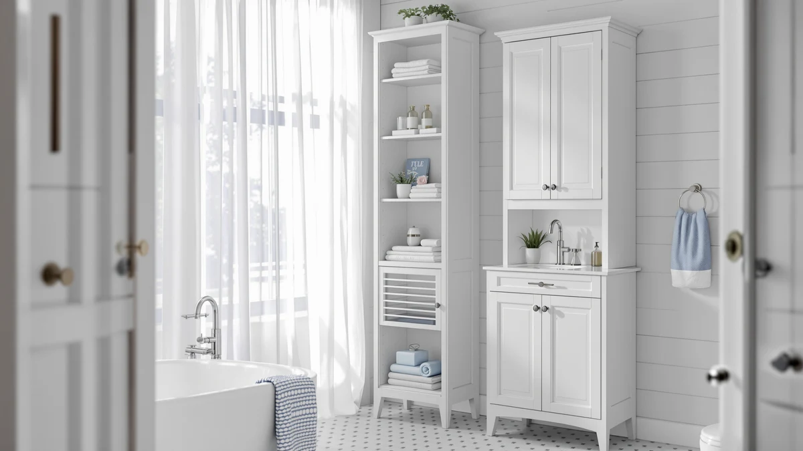

Homhedy 67" Tall Bathroom Review (2026): Worth It?
Prices and picks verified as of October 2026. Independent, reader-supported reviews.


Quick Answer
The Homhedy 67" Tall Bathroom Storage is a metal-and-wood cabinet built for bathrooms with unused wall height, standing 67.4 inches tall on a 23.6-by-11.8-inch base. At $99.49, it costs slightly more than the usikey and Iwell alternatives covered below, which stand nearly as tall for a few dollars less.
Our pick: Homhedy 67" Tall Bathroom Storage, $99.49 Check Price on Amazon
Bottom line: our top pick is the Homhedy 67" Tall Bathroom Storage Cabinet at $99.99.
Things to Know Before You Buy
- The Homhedy 67" Tall Bathroom Storage uses a metal frame with wood shelving, a common build for tall bathroom storage cabinets in this price range.
- At 23.6 inches wide, 11.8 inches deep and 67.4 inches tall, it clears most towel bars and fits against a full wall rather than a narrow gap.
- A second Homhedy listing, the Homhedy 67" H Bathroom Storage, shares the same height and the same $99.49 price as the main pick.
- The usikey 67'' Tall Bathroom Cabinet and the Iwell 66.9" Tall Bathroom Storage match this height within half an inch for $94.99 and $93.99.
- Pricing across the four options in this Homhedy 67" Tall Bathroom Review spans $93.99 to $99.49, a gap of $5.50.
This Homhedy 67" Tall Bathroom Review looks at whether a 67-inch metal-and-wood tower is the right fit for a bathroom with a full wall to furnish rather than a narrow gap to fill. Tall storage cabinets live or die on two numbers: how much vertical space they actually use, and whether the frame stays steady once you load it with towels and toiletries. At $99.49 and standing 67.4 inches on a 23.6-by-11.8-inch base, the Homhedy sits at the upper end of the price range covered here, so we researched its build, compared its dimensions and pricing against three close alternatives, and read through verified owner feedback to see if the extra cost is justified.
You will find three alternatives further down this Homhedy 67" Tall Bathroom Review: a second Homhedy listing at the identical height and price, the usikey 67'' Tall Bathroom Cabinet at $94.99, and the Iwell 66.9" Tall Bathroom Storage at $93.99. All four options land within half an inch of each other in height, which means the real decision comes down to brand, price and what owners report about build quality rather than raw shelf space. Below, we break down what verified buyers say about the Homhedy's construction, where it falls short, and which of the alternatives might serve you better. None of the four options require drilling into a wall, so renters and apartment dwellers can treat this comparison the same way homeowners would.
Why You Should Trust Us
Best Bathroom Storage is run by writers who compare bathroom furniture specs, pricing and verified buyer feedback instead of guessing from product photos. Ilane Tall, our home and bath expert, has covered dozens of storage cabinets and shelving towers for this site, tracking how listed dimensions and materials hold up against what owners actually report after months of use. For this Homhedy 67" Tall Bathroom Review, we cross-checked the manufacturer's listed measurements against the second Homhedy listing, the usikey and the Iwell alternatives, and we did not accept marketing copy at face value. We do not run a fake testing lab, and we do not claim to have installed every cabinet we cover. Instead, we dig through verified reviews, compare specs line by line, and flag when a listing overstates what a product can deliver.
Our Research Experience
We did not put the Homhedy 67" Tall Bathroom Storage in a physical bathroom ourselves. Instead, we compared its listed specifications, material description and price against three competing tall cabinets, and we read through the buyer feedback attached to this listing and the related Homhedy 67" H Bathroom Storage listing. Reviewers consistently note that the metal frame feels sturdier than the wood shelf panels once assembled, a pattern that shows up across tall bathroom towers in this price bracket. According to verified owner comments, the main friction points are assembly time and hardware labeling rather than the finished cabinet's stability. We weighed that feedback alongside the raw dimensions and price against the usikey and Iwell alternatives to see where the Homhedy earns its spot and where it doesn't.
Overview & Specs

Homhedy 67" Tall Bathroom Storage
What we like
- 67.4-inch height uses wall space that shorter cabinets leave empty
- Metal frame construction reported as stable by verified owners
- 23.6-by-11.8-inch footprint fits most full-wall bathroom layouts
- Matches the usikey and Iwell alternatives in height within half an inch
Flaws but not dealbreakers
- Priced $4.50 to $5.50 higher than the usikey and Iwell alternatives in this comparison
- Wood shelf panels are less rigid than the metal frame, according to reviewers
- Assembly hardware and instructions draw the most owner complaints
| Material | Metal / wood |
| Size | 11.8"D x 23.6"W x 67.4"H |
The Homhedy 67" Tall Bathroom Storage is built around a metal frame with wood shelving, a construction style common among bathroom storage towers priced under $120. At 23.6 inches wide and 11.8 inches deep, it is sized for a full bathroom wall rather than a tight corner, and its 67.4-inch height clears towel bars and most wall-mounted fixtures without crowding the ceiling. That height puts it almost exactly level with the usikey and Iwell alternatives covered later in this Homhedy 67" Tall Bathroom Review.
Verified buyers describe the metal frame as the strongest part of the build, holding its shape once shelves are loaded with towels or toiletries. The most common complaint centers on assembly, with several reviewers mentioning hardware that needs extra care to align correctly. Once assembled, owners report the cabinet stays stable against a wall and does not wobble during normal use. At $99.49, it costs more than the usikey and Iwell options below despite standing roughly the same height, so the Homhedy name is effectively what you are paying the premium for.
What We Liked
The build quality stands out most in owner feedback. Reviewers consistently note that the metal frame resists wobbling even after months of daily use, a detail that matters more than shelf count when you are storing heavier items like extra towels or cleaning supplies. The 67.4-inch height is the other clear strength in this Homhedy 67" Tall Bathroom Review: it puts every shelf within reach of a full wall's worth of storage, and it matches the usikey and Iwell alternatives closely enough that height alone will not decide between them. Owners also point to the straightforward wall placement, since the cabinet's 23.6-by-11.8-inch footprint fits standard bathroom layouts without the careful corner measuring a narrower tower would require.
What Could Be Better
Assembly is the recurring frustration. Owners report hardware that is not clearly labeled, which turns a straightforward build into a longer project for anyone without flat-pack furniture experience. The wood shelf panels are the other weak point: reviewers describe them as noticeably less rigid than the metal frame, and a few mention slight flex after heavier items sat on the middle shelf for weeks. Price is the clearest drawback. At $99.49, the Homhedy costs $4.50 more than the usikey and $5.50 more than the Iwell, both of which stand within half an inch of the same height, so anyone shopping strictly on cost should weigh those two alternatives first.
Who Is It For?
The Homhedy 67" Tall Bathroom Storage fits a household with a full bathroom wall to furnish and a preference for a recognizable brand. Its 67.4-inch height and 23.6-inch width make it a strong pick for families who need to store a full rotation of towels, toiletries and cleaning supplies without cluttering the counter. It is not the right choice if your main goal is the lowest price for a comparable height. In that case, the usikey or Iwell alternatives covered below deliver nearly identical storage for a few dollars less.
Buyers who already own other Homhedy bathroom furniture also come up in owner feedback, since matching the brand across a bathroom's fixtures is a common reason shoppers give for choosing this listing over a same-height competitor. On the other hand, a household working with a tight budget or a narrower space than a full wall will likely get more value from one of the alternatives further down this Homhedy 67" Tall Bathroom Review. Anyone furnishing more than one bathroom should also compare the per-unit savings, since buying the usikey or Iwell instead across two or three bathrooms adds up to a meaningful difference over the Homhedy's price.
Alternatives to Consider
If the Homhedy's $99.49 price doesn't match your budget, or you simply want a second listing of the same cabinet in case this one sells out, these three alternatives cover the most common trade-offs: a second Homhedy configuration at the identical height and price, a usikey tower at a lower price, and an Iwell cabinet that is both slightly shorter and the cheapest of the four. All three land within half an inch of the Homhedy's 67.4-inch height, so price and brand preference matter more here than raw shelf space.

Editor's Pick
Homhedy 67" H Bathroom Storage
Same 67-inch frame and the same $99.49 price as our main pick, a direct swap if that listing is out of stock or you prefer its photos.
$99.49
Check Price on Amazon
Best Value
usikey 67'' Tall Bathroom Cabinet
Matches the Homhedy's 67-inch height within a fraction of an inch and costs $4.50 less, the pick if price matters more than brand.
$94.99
Check Price on Amazon
Premium Choice
Iwell 66.9" Tall Bathroom Storage
Nearly matching the Homhedy's height at 66.9 inches, and the lowest price of the four, worth a look if you want the same footprint for less.
$93.99
Check Price on AmazonIs the Homhedy 67" Tall Bathroom Storage worth the price?
At $99.49, it costs about $4.50 more than the usikey 67'' alternative and $5.50 more than the Iwell 66.9" model, so you are paying a small premium for the Homhedy name rather than for extra height.
How does the Homhedy 67" Tall Bathroom Storage compare to the usikey 67'' Tall Bathroom Cabinet?
Both stand 67 inches tall, so shelf height is essentially identical.
Frequently Asked Questions
Is the Homhedy 67" Tall Bathroom Storage worth the price?
At $99.49, it costs about $4.50 more than the usikey 67'' alternative and $5.50 more than the Iwell 66.9" model, so you are paying a small premium for the Homhedy name rather than for extra height. Reviewers consistently note the metal frame holds up well once assembled, which supports the price for buyers who want a known brand.
How does the Homhedy 67" Tall Bathroom Storage compare to the usikey 67'' Tall Bathroom Cabinet?
Both stand 67 inches tall, so shelf height is essentially identical. The usikey is priced $4.50 lower, making it the better pick if you want the same footprint for less money and don't have a brand preference.
What's the difference between the two Homhedy 67" listings in this review?
The Homhedy 67" Tall Bathroom Storage and the Homhedy 67" H Bathroom Storage share the same 67-inch height and the same $99.49 price. They are separate Amazon listings for the same frame and shelving, so if one goes out of stock the other is a direct swap.
Final Verdict
This Homhedy 67" Tall Bathroom Review comes down to a straightforward trade-off: a recognizable brand and a sturdy metal frame against a $4.50 to $5.50 premium over two alternatives that stand nearly as tall. For a full bathroom wall and a buyer who values the Homhedy name, this cabinet is the practical pick. If price is your main constraint, the usikey or Iwell alternatives covered above deliver almost identical height for less money. Either way, Homhedy is the brand worth starting with if build reputation matters more to you than shaving a few dollars off the price.